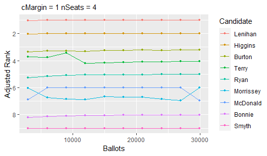
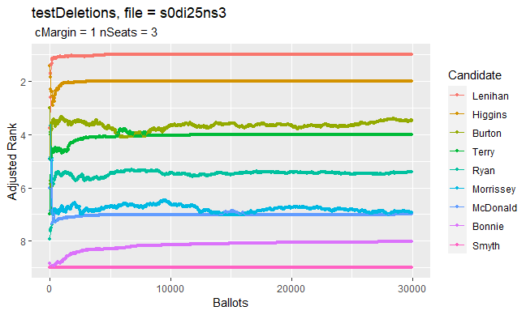

The goals of SafeVote are to investigate the safety of announcing preliminary results from an election, and to allow experimental study of the safety of a complete ranking of all candidates (as in a party list) that is derived from a small-scale election with preferential ballots.
Installation
You can install the development version of SafeVote from GitHub with:
# install.packages("devtools")
devtools::install_github("cthombor/SafeVote")Examples
This mod of vote.2.3-2 reports the margins of victory in an election.
The value of the safety parameter will affect the completeness of the safeRank ordering of the candidates. Setting safety = 0 will cause safeRank to be a total ranking of the candidates, except in the rare case that there is an exact tie. The “fuzz” z on the vote-differentials in a safeRank clustering of the candidates is $z = s\sqrt{n}$, where s is the value of the safety parameter and n is the number of ballots.
library(SafeVote)
data(food_election)
stv(food_election)
stv(food_election, safety=0.25)
stv(food_election, safety=0)A few safety-testing routines are supplied, to support experimental study of the statistical behaviour of ballot counting methods. For example, testFraction draws a series of independent samples from a ballot box, which we expect to be helpful in estimating the number of ballots required to form a stable result. As seen below, in the case of the dublin_west dataset, only a few thousand ballots are sufficient to reliably determine the three winners (Lenihan, Higgins, Burton). By contrast, the relative ranking of Ryan and Morrissey is still somewhat unstable when the last few thousands of ballots are being counted.
data(dublin_west)
plot(testFraction(dublin_west,astart=8,ainc=20,countArgs=list(nseats=3)))
testAdditions can be used to assess the sensitivity of an STV election to a tactical-voting strategy of “plumping” for a favoured candidate. For example, we find it takes only two “plumping” ballots to shift “Strawberries” from third place to second place in the food_election dataset. Note that in this test we have set the safety parameter of the stv ballot-counting method to zero, so that the output of testAdditions reveals a complete ranking of the candidates unless there is an exact tie.
data(food_election)
testAdditions(food_election, arep = 2, favoured = "Strawberries",
countArgs = list(safety = 0))
#>
#> Adding up to 2 stv ballots = ( 3 5 4 1 2 )
#> Testing progress: 1, 2
#>
#> Results of testAdditions at 2022-12-26 08:25:22
#>
#> Dataset = food_election, countMethod = stv, rankMethod = safeRank
#>
#> | | safety|
#> |:---------|------:|
#> |countArgs | 0|
#>
#>
#> | | ainc| arep| tacticalBallot|
#> |:------------|----:|----:|----------------------------------------------------------------------:|
#> |otherFactors | 1| 2| c(Oranges = 3, Pears = 5, Chocolate = 4, Strawberries = 1, Sweets = 2)|
#>
#> Experiment ID, number of ballots in simulated election, ranks, winning margins:
#>
#> |exptID | nBallots| Oranges| Pears| Chocolate| Strawberries| Sweets| m.Oranges| m.Pears| m.Chocolate| m.Strawberries| m.Sweets|
#> |:------|--------:|-------:|-----:|---------:|------------:|------:|---------:|-------:|-----------:|--------------:|---------:|
#> |SBK0 | 20| 2| 5| 1| 3| 4| 1.4451111| 2| 8| 1.7774444| 0.7774444|
#> |SBK1 | 21| 2| 5| 1| 3| 4| 0.6673333| 2| 8| 2.6663333| 0.6663333|
#> |SBK2 | 22| 3| 5| 1| 2| 4| 3.4447778| 2| 8| 0.1104444| 0.5552222|testDeletions deletes ballots sequentially from the ballot box, counting after each deletion. When its results are plotted in inverse order of collection (i.e. in increasing order of the number of ballots n) we see a possible evolution of the preliminary results from an election in which the initial order of ballots in the ballot box had been randomised. Note that a plot of the results of testFraction has quite a similar appearance, however the ballot boxes counted in testFraction are independently sampled (“bootstrapped”) from the full dataset of ballots. By contrast, testDeletions samples without replacement from the original ballot box, when constructing its next experimental unit.
xr <- testDeletions(dublin_west,dinc=25,dstart=29988,quiet=FALSE,
countArgs=list(safety=0.0,complete.ranking=TRUE,nseats=3))
save(xr,file="../s0di25ns3.rdata")
plot(xr,title="testDeletions, file = s0di25ns3")
In the plots above, the “adjusted rank” of a candidate is their ranking r plus their scaled margin of victory. Because the most-popular candidate is at rank 1, we invert the usual convention for the x-axis on Cartesian plots so that the first-elected candidate appears first in the legend and their scaled margin is the uppermost. Because margin of victory m must be non-negative but it may be quite a large number; and because it is only the small margins of victory which affect the safety of an election result: we compute a scaled margin as $e^{-cm/\sqrt{n}}$. This exponential adjustment hugely accentuates the visual importance of the margins that are comparable in magnitude to the square root of the number of ballots n multiplied by the number of seats s) – which is a rough proxy for the standard deviation of a candidate’s margin of victory in an election where at least some voters are marking their ballots essentially at random. The margin-scaling parameter c may be adjusted using the parameter cMargin of plot.SafeVote. Note that Morrissey’s adjusted rank is visually very close to McDonald’s adjusted rank when most of the ballots have been counted in the sample testDeletions plot above, suggesting (correctly!) that relatively small variations in voter behaviour could affect their relative ranking.